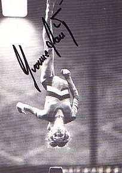

Yvonne Haug (FRG)
1982 and 1983 FRG AA Champion

Competition Results
1979
FRG Schoolchildren's Championships: 1st AA
1980
Jr. European Championships: 23rd AA
Jr. FRG Championships: 1st AA, 1st V, 1st B
1981
World Championships: 9th Team, 32nd AA
1982
Blume Memorial: 4th AA
FRG Championships: 1st AA, 1st B
HUN-FRG Dual Meet: 1st AA
Intl. Championships of Romania: 8th AA
USGF International Invitational: 15th AA
1983
American Cup: 10th AA (prelims)
European Championships: 16th AA
FRG Championships: 1st AA, 1st UB, 1st B, 1st FX
World Championships: 8th Team, 19th AA
This page was created on March 13,
2005 and was last updated on July 23, 2005.
© Gymn Forum